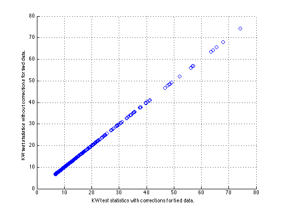
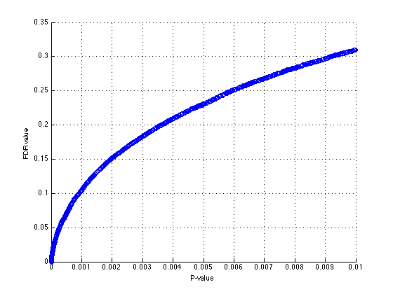
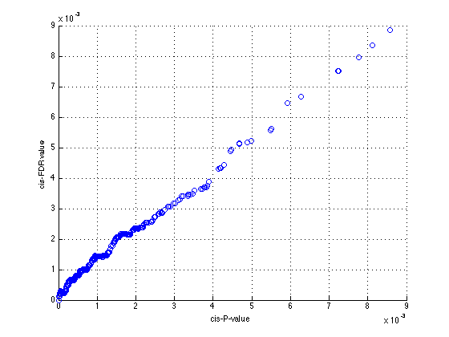

kruX Tutorial
This webpage and its associated m-script (kruX_tutorial_matlab.m) illustrate the various features of kruX. Please make sure that you've added the folder were you downloaded the kruX source code to your Matlab search path before you attempt to run any of the code that follows.
Contents
Data import
We use Matlab's built-in function to import data. This can also be done via the GUI if you prefer.
Gene expression data
dat = importdata('kruX_testData_expression.txt');
expression = dat.data;
samples = dat.textdata(1,2:end);
genes = dat.textdata(2:end,1);
Marker genotype data
dat = importdata('kruX_testData_genotype.txt'); genotype = dat.data; samples = dat.textdata(1,2:end); markers = dat.textdata(2:end,1); clear dat;
Testing all marker - gene combinations at once
Our test data set is small enough that all combinations fit in memory. Let's get all pairs with P-value below 0.01:
Pcut = 1e-2; [I,J,P,S,df] = kruX(expression,genotype,Pcut);
The previous command assumes that the Statistics Toolbox is installed. If this isn't the case, we can still compute the test statistics and P-values, but no correction for ties in the expression data will be made. To call kruX in this mode, cutoffs on the chi-square test statistic for all relevant degrees of freedom need to be supplied instead of a P-value cutoff. The cutoff corresponding to P<=0.01 for markers with 1 degree of freedom is
Scut = chi2inv(1-Pcut,1);
(but note that chi2inv itself is part of the Statistics Toolbox so without it, you'll have to look up the cutoff values somewhere else).
[I2,J2,P2,S2,df2] = kruX(expression,genotype,Scut);
Without the Statistics Toolbox we didn't correct for ties in the expression data. Does this make a big difference?
[Ic,ix1,ix2] = intersect([I,J],[I2,J2],'rows');
99.86% of pairs are common and the statistics computed with either method differ by not more than 1.8% (for this particular dataset)
max(abs(S(ix1)-S2(ix2))./S(ix1))
ans =
0.0179
Or in a figure:
scatter(S(ix1(1:100:end)),S2(ix2(1:100:end))); xlabel('KW test statistics with corrections for tied data.'); ylabel('KW test statistics without corrections for tied data.'); grid
Sliced data
For dense genome-wide data in human or other higher organisms, the number of markers and expression traits is usually too large to run kruX in one go (kruX needs to fit a matrix of size (number of markers) x (number of genes) into memory). The solution is to slice the genotype data into manageable chunks. To let kruX do all the slicing for you, use the call
slice = 100; [I3,J3,P3,S3,df3] = kruX(expression,genotype,Pcut,slice);
The end result is of course the same
norm(S3-S)
ans =
0
In this case the genotype data is divided in chunks of 'slice' markers and the statistics for each chunk are computed serially. For big datasets it will be much faster to run separate chunks in parallel. To compute the statistics for one particular data chunch of size 'slice' starting at marker 'start', use
slice = 100; start = 701; [I4,J4,P4,S4,df4] = kruX(expression,genotype,Pcut,slice,start);
Again producing the same result:
norm(S4-S(J>=start & J<start+slice))
ans =
0
You will have to write your own wrapper to launch different slices on different processors and combine their outputs.
Empirical FDR correction
To assess the statistical significance of our findings, we need to correct for multiple testing. To account for the myriad of correlations in genome-wide data, corecting via an empirical null distribution is the way to go. We will calculate a null distribution from 10 random permutations of the data.
nrand = 10; Prand = cell(nrand,1); Irand = cell(nrand,1); Jrand = cell(nrand,1); for k=1:nrand per = randperm(size(expression,2)); [Irand{k},Jrand{k},Prand{k}] = kruX(expression(:,per),genotype,Pcut); end
We can use the random results to convert the original P-values to empirical False Discover Rates (FDR). For a given Px, the FDR is defined as the average number of associations with P<=Px in the random data, divided by the number of associations with P<=Px in the real data. A function to do this calculation is included for your convenience:
FDR = fdrvec(P,Prand);
How do FDR values relate to P-values in this dataset?
scatter(P(1:100:end),FDR(1:100:end)); xlabel('P-value'); ylabel('FDR value'); grid;
We also provide a function to determine the P-value cutoff at a given FDR level:
FDRcut = 0.10; Pcut2 = fdrcut(P,FDR,FDRcut)
Pcut2 = 9.0516e-04
Sometimes it is preferred to consider cis-pairs only (i.e. marker-gene pairs within a fixed genomic distance of each other). A function is provided to filter the relevant P-values if you have such a list of cis-pairs.
Let's create an artificial list of cis-pairs with for each gene its best marker
[~,t] = sort(P);
[Icis,m] = unique(I(t),'first');
Jcis = J(t(m));
Get the real and random P-values for the cis-pairs
[Icis0,Jcis0,Pcis] = cisselect(Icis,Jcis,I,J,P); Pcisrand = cell(nrand,1); for k=1:nrand [~,~,Pcisrand{k}] = cisselect(Icis,Jcis,Irand{k},Jrand{k},Prand{k}); end
FDR correction:
FDRcis = fdrvec(Pcis,Pcisrand);
Now of course the same P-value leads to a much lower FDR value than before:
scatter(Pcis,FDRcis); xlabel('cis-P-value'); ylabel('cis-FDR value'); grid;
kruX is exact
With the Statistics Toolbox installed, kruX returns the exact P-value for the Kruskal-Wallis test statistic.
Let's select 1000 pairs at random from our previous set and compute their Kruskal-Wallis P-value using the built-in function:
numpairs = 1000; t = randi(length(P),numpairs,1); Pkw = zeros(numpairs,1); Skw = zeros(numpairs,1); for k=1:numpairs [Pkw(k),tab] = kruskalwallis(expression(I(t(k)),:),genotype(J(t(k)),:),'off'); Skw(k) = tab{2,5}; end
The relative difference between both methods is a bit more than machine precision:
[max(abs((Pkw-P(t))./Pkw)) max(abs((Skw-S(t))./Skw))]
ans =
1.0e-13 *
0.5090 0.1253
kruX handles missing data
kruX can deal with missing data in both expression and genotype data. In expression data, missing values should be indicated by NaN's; in genotype data, they can be indicated by NaN's or -1. Let's set some random entries in the data to missing values; for the genotyope data we limit the number of markers with missing data to keep computation time reasonable.
mfreq = 0.01; nmark = 100; nanE = logical(binornd(1,mfreq,size(expression))); expression_md = expression; expression_md(nanE) = nan; nanG = false(size(genotype)); nanG(randi(numm,nmark,1),:) = logical(binornd(1,mfreq,nmark,size(genotype,2))); genotype_md = genotype; genotype_md(nanG) = nan;
Missing expression data has no effect on execution time:
tic kruX(expression_md,genotype,Pcut); toc
Elapsed time is 1.466368 seconds.
but a small number of missing genotype data already leads to a sharp increase in computational cost:
tic [Imd,Jmd,Pmd,Smd,dfmd] = kruX(expression_md,genotype_md,Pcut); toc
Elapsed time is 9.554019 seconds.
Let's compare to the built-in function for some of the markers with missing values:
tf = ismember(Jmd,find(sum(isnan(genotype_md),2))); Imd2 = Imd(tf); Jmd2 = Jmd(tf); Pmd2 = Pmd(tf); Smd2 = Smd(tf); t = randi(length(Imd2),numpairs,1); Pkw = zeros(numpairs,1); Skw = zeros(numpairs,1); for k=1:numpairs [Pkw(k),tab] = kruskalwallis(expression_md(Imd2(t(k)),:),genotype_md(Jmd2(t(k)),:),'off'); Skw(k) = tab{2,5}; end
The result is still exact:
[max(abs((Pkw-Pmd2(t))./Pkw)) max(abs((Skw-Smd2(t))./Skw))]
ans =
1.0e-13 *
0.4869 0.1036
kruX is fast
If you hadn't already noticed by now, kruX is fast. For out test data the P-values for all 4 million pairs actually fit in memory. How long does it take to compute them?
tic; [Iall,Jall,Pall,Sall,dfall] = kruX(expression,genotype,1.0); tkruX = toc;
The average time per test is
numg = size(expression,1); numm = size(markers,1); tkruXavg = tkruX/(numg*numm)
tkruXavg = 9.5761e-07
Let's average the built-in function over 1000 tests:
t1by1 = zeros(numpairs,1); t = randi(length(P),numpairs,1); for k=1:numpairs tic [Pkw(k),tab] = kruskalwallis(expression(I(t(k)),:),genotype(J(t(k)),:),'off'); t1by1(k) = toc; end t1by1avg = mean(t1by1)
t1by1avg =
0.0013
So in this particular case, kruX is about
t1by1avg/tkruXavg
ans = 1.4008e+03
times faster than performing all tests one-by-one.
Goodbye
May kruX help you get through the crux of your eQTL data analysis and do get in touch if you need any further help.
The kruX Team
Jianlong Qi,
Hassan Foroughi Asl and
Tom Michoel